主要内容
- 核心能力
- 适用场景
- 应用案例（参考截图）
- 与其他前端框架对比的优劣势
- 存在的问题及改进计划
什么是TTK?

TTK是the three kingdoms(三国演义)的缩写，是一个团队的代号，目的是为企业应用提供易用、高效、快速的技术开发平台。
TTK前端框架（
ttk-app-core）专注前端的研发和积累、用新技术将复杂的商业产品的工程化。
TTK脚手架用于快速创建开发、调试、打包等环境。
提供更多的
通用业务模板，易于复制，能带来研发效率，质量和用户体验上的提升。
提供简单易用的前端构建
atool-build工具，可用于任何前端项目的打包。
总体设计
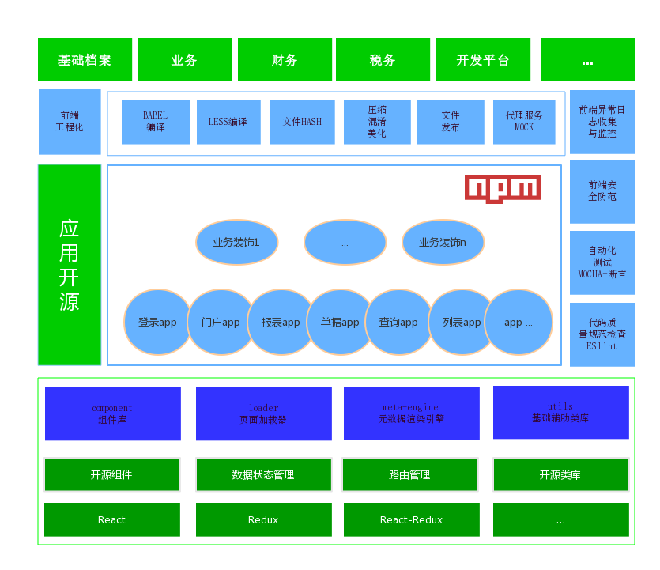
浏览器支持
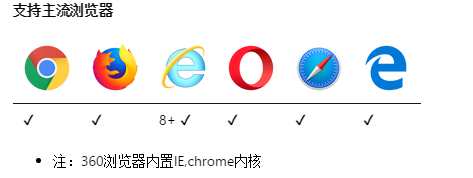
框架核心
| 页面加载引擎 | 页面解析引擎 |
| 丰富的UI组件 | 通用公共类库 |
| 前端工程化 | |
页面加载引擎
- 简化Redux状态管理的过程
页面解析引擎
- 运行原理
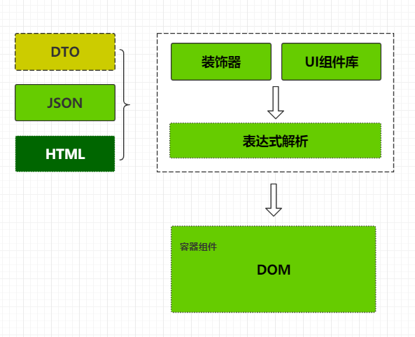
页面解析引擎
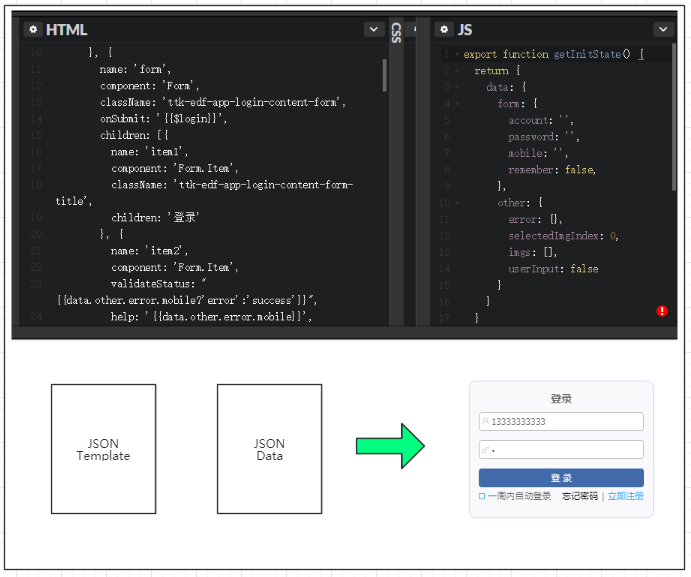
扩展的UI组件
组件使用文档（完善中...）
类库
UI组件属性与元数据绑定
通用的公共类库(20+)
封装公共业务逻辑
前端工程化
webpack@3.x
- 开发规范|开发流程|质量检查|自动化测试|开发工具|持续集成|异常监控|测试部署|发布|...
- 编译代码，比如jsx、less、saas、ES6
- 资源合并打包、混淆、压缩丑化、资源签名、防止浏览器缓存
who use?
应用案例
排名不分先后
北京财务云研发中心
广州税务云团队
深圳团队
工信部(电子一所外包项目)
新浪内部运行项目
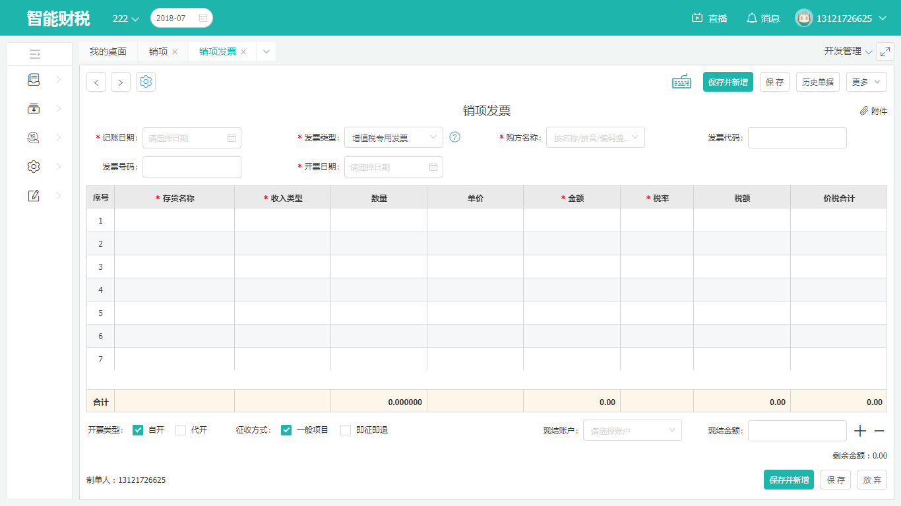
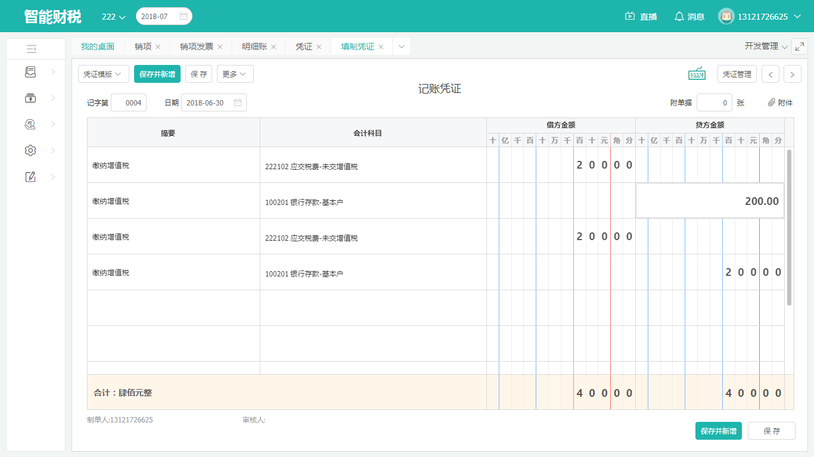
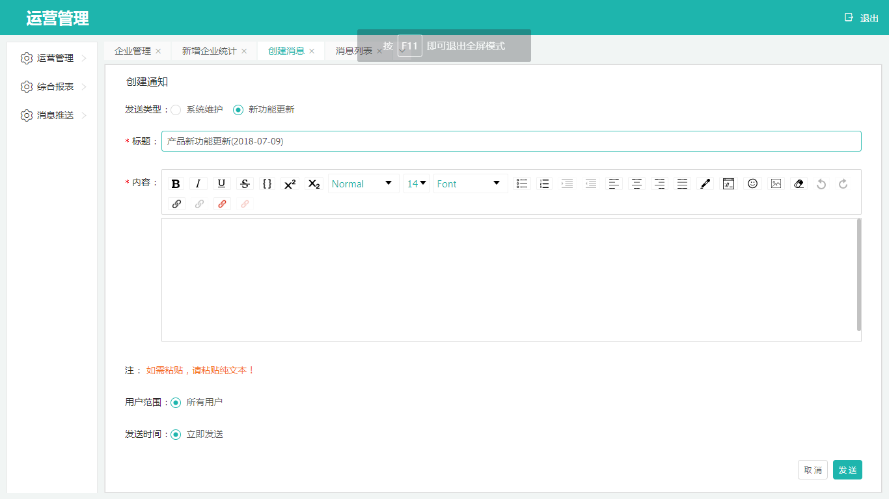
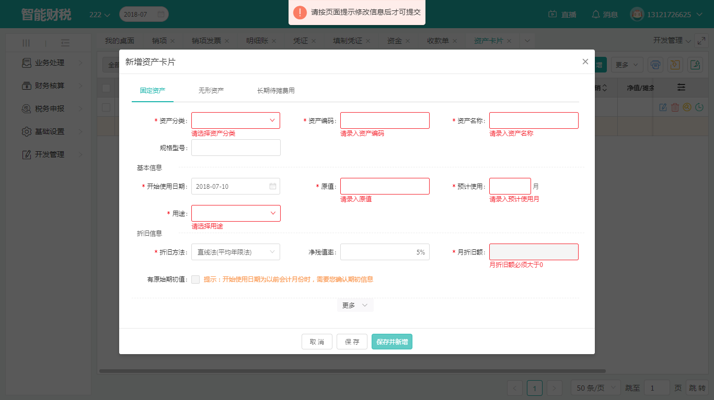
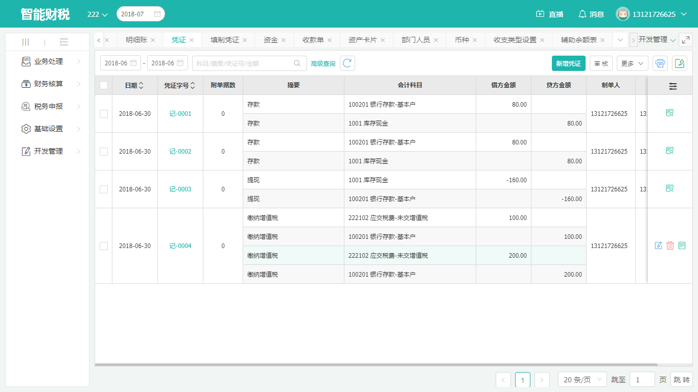
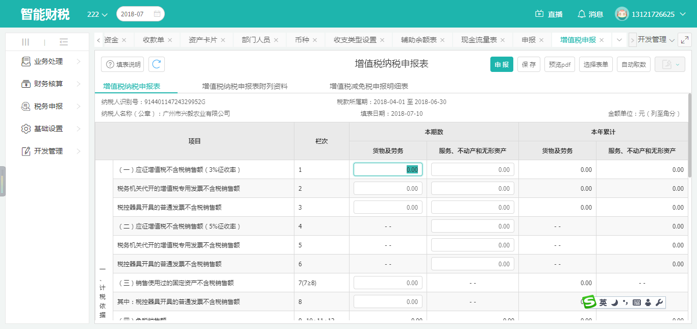
前端框架哪家强
百花齐放的前端框架
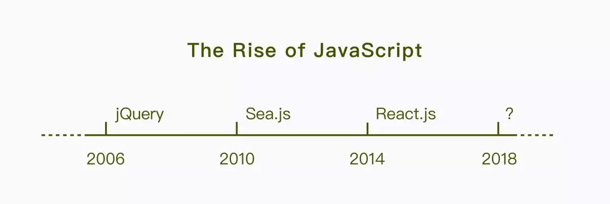

github活跃度对比
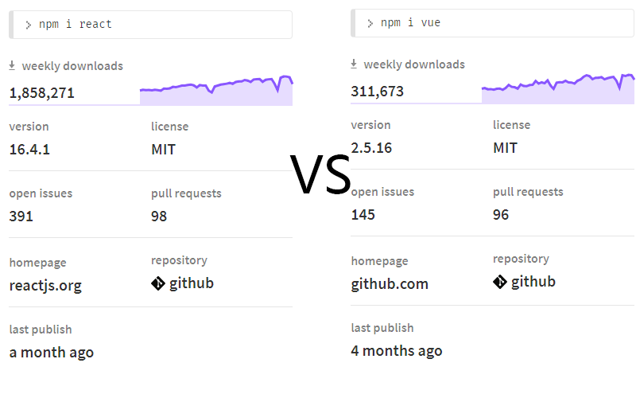
性能对比
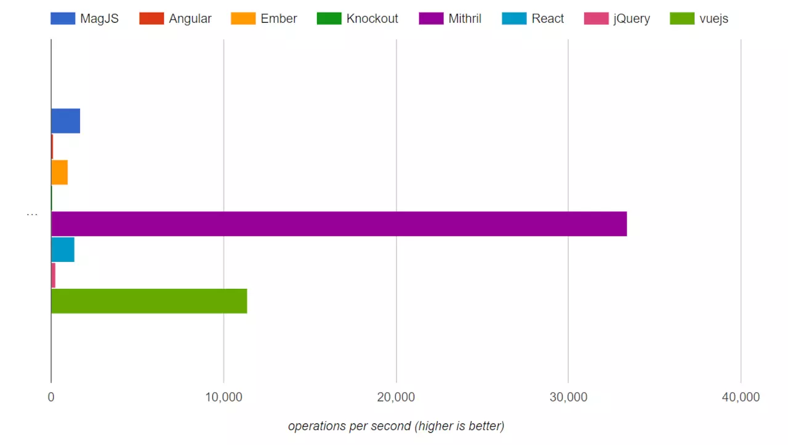
社区建议
如果你的应用需要尽可能的小和快，请使用Vue
如果你计划构建一个大型应用程序，请使用React
如果你想要一个同时适用于Web端和原生App的框架，请选择React
...
没有最好的框架，只有最合适的自己的业务的。当业务频繁变化时，技术能跑在业务前面就行。
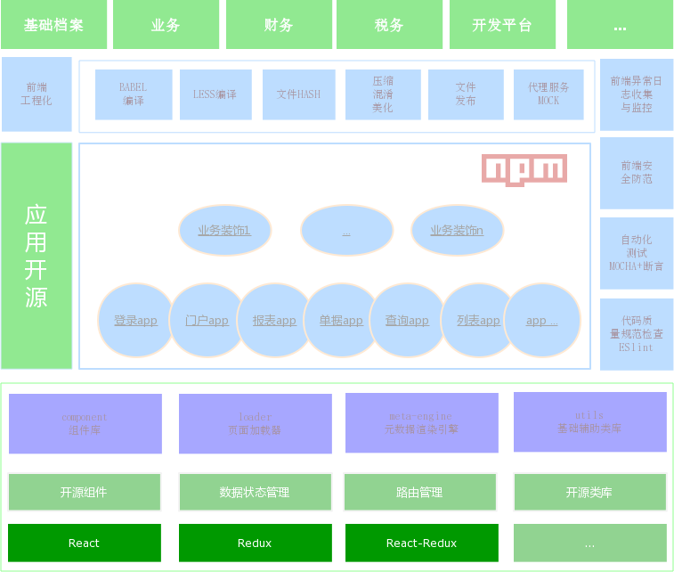
存在的问题及改进计划
存在的问题
- 框架不太适用手机端 原因：业务组件、类库较大(antd、echarts、fixed-data-table、immutable-js、moment等)都不太适用于移动端。
- 新手在页面模型有点复杂
- 多端响应式支持不太好、不支持IE8以下浏览器
- 帮助文档还有待完善
改进计划
- 考虑框架封装vuejs,vuex,这样就框架就可能在react和vue之间切换
- 支持更多风格的开源组件库如：element-ui、material-ui
- 目前正在开发UI Design工具，可视化页面配置，可以导出页面模型
- 页面的响应速度、安全性等方面的还要持续优化
- 接入electron、nw，快速构建客户端应用程序
- node中间层的优化、后端预渲染
- 开源更多的不同页面模板
- 前端与后端ttk-server完全整合、形成前后端统一的开发框架
Q/A